A model expression and one or more data files, as in the command we just ran.
A saved fit description: the model, its parameters and the fit options.
Many fit descriptions run as one batch, side by side.
Each data set is fitted on its own.
Shared parameters across all the data sets.
Share the ones you choose; fit the rest per data set.